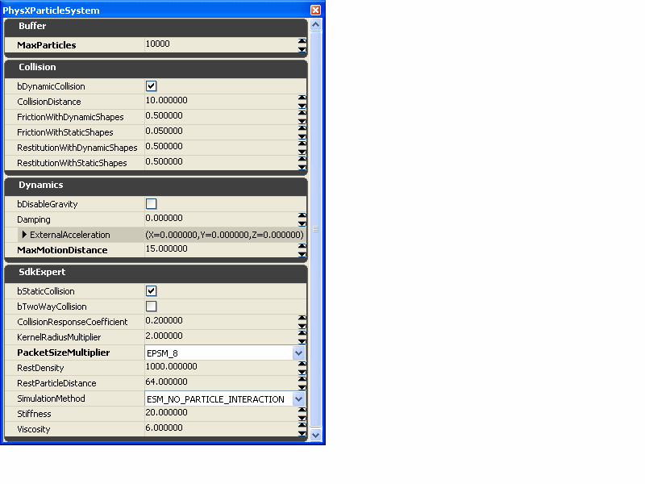

UDN
Search public documentation:
PhysXParticleSystemReferenceJP
English Translation
中国翻译
한국어
Interested in the Unreal Engine?
Visit the Unreal Technology site.
Looking for jobs and company info?
Check out the Epic games site.
Questions about support via UDN?
Contact the UDN Staff
中国翻译
한국어
Interested in the Unreal Engine?
Visit the Unreal Technology site.
Looking for jobs and company info?
Check out the Epic games site.
Questions about support via UDN?
Contact the UDN Staff
PhysX パーティクルシステム リファレンス
ドキュメントの概要: PhysX パーティクル システムと、メッシュ/スプライトエミッタにおけるその使用法、ならびにグローバル パーティクル LOD の適用。 ドキュメントの変更ログ: Simon Schirm により作成。概要
PhysXParticleSystem は、!PhysX 流体パラメータのコンテナです。このパラメータセットはエディタ内で分かりやすく整理されていて、2.8.0 (まだ統合されていません) で登場する新しいパラメータを反映するフィールドも含まれています。!PhysXParticleSystem は多数のエミッタによって共有することができ、そのためパーティクル シミュレーションの物理特性の調整データを簡単に再利用できます。!PhysXParticleSystem は PhysX シーンにパーティクルの運動と衝突を提供するほか、SPH (Smoothed Particle Hydrodynamics、平滑粒子法) 流体のシミュレーションを実行するように設定することもできます。 PhysXParticleSystem オブジェクトを使用するには、特別な PhysX エミッタタイプのデータモジュールからこれを参照します。選択可能なモジュールとして、 PhysXMeshTypeData と PhysXSpriteTypeData の 2 つがサポートされています。いずれのエミッタタイプも、グローバル LOD の振る舞いを調整するパラメータを提供しています。 PhysXMeshTypeData は、回転メッシュとしてパーティクルを表示するのに使用でき、破片や落ち葉など小さな単純オブジェクトのシミュレーションに適しています。大規模のパーティクルエフェクトを実現するために、このエミッタタイプは高速のインスタンスレンダリングパスを使って最適化されています。 PhysXSpriteTypeData では、!PhysXParticleSystem を用いてあらゆるタイプのスプライトパーティクルのアニメーションを操作できます。 PhysXParticleSystem オブジェクトを用いてシミュレートするすべてのパーティクルについて、LOD の制御が可能であり、シミュレートするパーティクルの量やパーティクルのLifetime、およびスポーン動作を、個々のエミッタに対して調整できます。 EmitterLodControl を参照してください。PhysXParticleSystem
PhysXParticleSystem を新規作成するには、Generic ブラウザで右クリックして [New PhysXParticleSystem] (新規 PhysX パーティクルシステム) を選択します。!PhysXParticleSystem は基本的なアセットエディタで編集できます。
最も頻繁に使用するパラメータは、最初の 3 つのカテゴリー (Buffer 、 Collision 、 Dynamics) にあり、あまり使用されないパラメータや調整が難しいパラメータ (SPH パラメータなど) は、 SdkExpert の下にあります。| Buffer | |
| MaxParticles | この PhysXParticleSystemの最大パーティクル数 |
| Collision | |
| bDynamicCollision | 動的剛体の衝突を有効/無効にする |
| CollisionDistance | パーティクルが剛体サーフェスと衝突する距離 |
| FrictionWithDynamicShapes | 動的剛体との衝突における摩擦係数 |
| FrictionWithStaticShapes | 静的剛体との衝突における摩擦係数 |
| RestitutionWithDynamicShapes | 動的剛体との衝突における反発係数 |
| RestitutionWithStaticShapes | 静的剛体との衝突における反発係数 |
| Dynamics | |
| bDisableGravity | PhysXParticleSystem のシーン重力を無効にする |
| Damping | 速度の減衰 (ダンピング) |
| ExternalAcceleration | 各シミュレーションステップに適用される加速度ベクトル |
| MaxMotionDistance | 1 回のシミュレーションステップ内でのパーティクルの移動距離の上限 |
| SdkExpert | |
| bStaticCollision | 静的剛体の衝突を有効/無効にする |
| bTwoWayCollision | パーティクルと剛体間の双方向作用を有効/無効にする |
| CollisionResponseCoefficient | 双方向作用のスケーリング係数 |
| KernelRadiusMultiplier | SPH のパーティクルの作用半径、!RestParticleDistance の相対値 |
| PacketSizeMultiplier | 並列計算時の相対的なグリッドセルのサイズ |
| RestDensity | パーティクルの質量設定。SPH の場合、1000 に近い値で良好な結果が得られる |
| RestParticleDistance | Rest (休止) ステートにあるパーティクルの間隔を定義する |
| SimulationMethod | SPH の計算を有効/無効にする |
| Stiffness | SPH の弾性 |
| Viscosity | SPH の粘度 |
- bTwoWayCollision を有効にすると、衝突時のメッシュパーティクルの自動位置付けが無効になります。
- SPH を使用する場合、適切なパフォーマンスや動作を得るには KernelRadiusMultiplier は通常 1.7 から 2.0 の間の値に設定するようにします。
- SPH を使用しない場合、パーティクルの力場のスケーリングに RestDensity を使用することができます。現在の PhysX の力場はまだ機能固有のスケーリングをサポートしていないので、これを必要とする可能性があります。
- CollisionDistance と、特に MaxMotionDistance は、指定エフェクトに対して出来るだけ低い値を設定することをお勧めします。
- 計算の並列処理には通常の空間グリッドを使用し、衝突と SPH ダイナミクスではいずれもグリッドセル (パケット) を使用します。
- パケットサイズの定義式: KernelRadiusMultiplier * RestParticleDistance * PacketSizeMultiplier.
- 任意のユースケースで良好なパフォーマンスを得るには、パケットサイズが決め手です。
- パフォーマンスを重視する場合は、パケット数が少ない (サイズが大きい) 方が適しています。
- サイズは衝突効率の計算時間 (および PPU 上のメモリ使用) に影響します。
- SPH の場合は、以下の 3 つの相対値パラメータセットによりパケットサイズを定義します。
- KernelRadiusMultlier は約 2.0 に設定する必要があります。
- RestParticleDistance はエフェクトのスケールに応じて指定します。
- PacketSizeMultiplier は、シナリオの密度に応じて選択します。パーティクルの密度が比較的高い場合は、小さなサイズを選択します。
- 相互作用なしのパーティクルの場合、最適な衝突セットの選択が必要です。
- KernelRadiusMultiplier と RestParticleDistance を PacketSizeMultiplier に対してむしろ大きな値に設定することで、PPU 上のメモリ消費量を抑えることができます。
PhysX メッシュエミッタ
PhysXMeshEmitter は、カスケードメニューの [Type Data] (タイプデータ) フィールドで、[PhysX Mesh Data] を選択して作成します。 PhysX Mesh Data のプロパティ ダイアログには、!PhysX 固有のプロパティがいくつか含まれています。
PhysX Mesh Data のプロパティ ダイアログには、!PhysX 固有のプロパティがいくつか含まれています。
| PhysXParSys | パーティクルのシミュレートに使用する PhysXParticleSystem |
| PhysXRotationMethod | パーティクルメッシュの基本形状フィーチャーを反映するメソッドを選択する |
| FluidRotationCoefficient | パーティクルメッシュの回転に寄与する線速度または衝突の度合い |
| VerticalLod | グローバル EmitterLodControl のパラメータ |
- 異なるエミッタで同じ PhysXParticleSystem を共有できる場合は共有します。
- 汎用 PhysXRotationMethod は出来るだけメッシュにぴったり一致させます。適切に合わせるために、メッシュの配置を変更しなければならない場合があります。
PhysX スプライトエミッタ
PhysXSpriteEmitter は、カスケードメニューの [Type Data] (タイプデータ) フィールドで、[PhysX Sprite Data] を選択して作成します。| PhysXParSys | パーティクルのシミュレートに使用する PhysXParticleSystem |
| VerticalLod | グローバル EmitterLodControl のパラメータ |
グローバル パーティクル LOD
Unreal エミッタ システムは、距離ベースの LOD 機能を提供します。PhysX エミッタの実装では、追加の LOD メカニズムによりグローバル パーティクルの予算を設定することができます。必要なパラメータにアクセスするには、!WorldInfo.Physics をアクティブにする必要があります (WorldInfo.uc で、"hidecategories(Physics )" のコメントを外します)。 グローバル パーティクル LOD を適用して協働的に機能させるには、2 つの基本的な方法があります。- FIFO モード: エミッタエフェクトのパーティクルを優先待ち行列内で編成します。古いパーティクルは優先順位が低くなり、パーティクルが予算オーバーした場合に先に消去されます。各エミッタエフェクトに対してパーティクル消去の優先順位を設定することもできます。
- エミッションボリュームの削減: 特定のエミッタのパーティクル予算に合わせるために、エミッションボリュームを削減することができます。ボリュームは、パーティクルの平均存続時間と平均速度の積として定義され、パーティクルの全体的な予算はすべてのアクティブなエミッタ間で配分されます。
| BaseEngine.ini (該当するゲームの、Engine.ini の [Engine.PhysicsLODVerticalEmitter] の下 | |
| ParticlePercentage | グローバル パーティクル LOD 設定をパーセント単位で定義。デフォルト: 100 |
| WorldInfo.Physics.VerticleProperties.Emitters | |
| ParticlesLodMin | 0 ParticlePercentage におけるマップのグローバル パーティクル予算 |
| ParticlesLodMax | 100 ParticlePercentage におけるマップのグローバル パーティクル予算 |
| bApplyCylindricalPacketCulling | これを設定した場合、パケット距離はカメラ回りの水平面で評価される |
| PacketsPerPhysXParticleSystemMax | 各 PhysXParticleSystem の流体パケットの上限。適正値は 50 から 600 の間。できるだけ小さな値を推奨 |
| SpawnLodVsFifoBias | エミッタのスポーン速度と存続期間が、グローバル パーティクル数の制限の影響をどのぐらい受けるかを定義する。0 は、エミッションボリュームの削減が適用されないことを意味する |
| PhysXMeshTypeData.VerticalLod または PhysXSpriteTypeData.VerticalLod | |
| WeightForFifo | 古いパーティクルの消去に関するエミッタエフェクトの相対重量。 値が比較的低い場合、システムは他のエミッタエフェクトからパーティクルを削除する (可能な場合)。 |
| WeightForSpawnLod | WeightForFifo と同じであるが、エミッションボリュームの削減に関する重量。 |
| SpawnLodRateVsLifeBias | スポーンボリュームが、エミッション速度またはパーティクルの存続期間のいずれかの低下によってどのぐらい影響を受けるかを定義する。 |
| RelativeFadeoutTime | パーティクル映像のフェードアウトに適用する、存続期間の割合を設定する必要がある。LOD システムはパーティクルを即座に削除せず、フェードアウトを試みる。 |
制限事項と確認されている問題
- PhysXMeshTypeData エミッタは、!SizeByLife のアップデートモジュールしかサポートしていません。このサポートは、少なくともランタイムの頂点色のアップデートにも拡張する予定です。
- PhysX エミッタではリアルタイムプレビューが適切に動作しません。
- 現在は、同じタイプのすべての PhysXMeshTypeData エミッタが 1 つのバッチとしてレンダリングされます。将来は、バッチレンダリング用にエミッタ インスタンスのカスタムグループ化をサポートする予定です。
- PhysX エミッタは衝突メッシュのカスケード プレビューでは機能しません。
- 現在のところ、エミッタの準備時間のサポートは提供していません。
- bUseLocalSpace はサポートされていません。